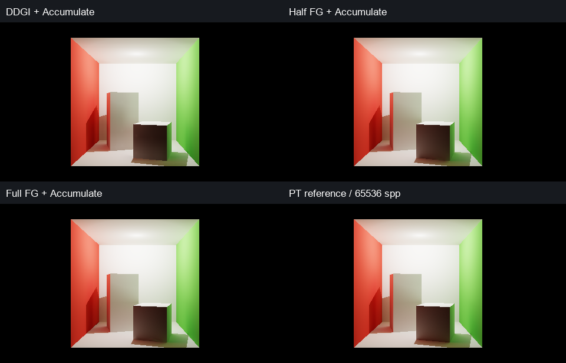
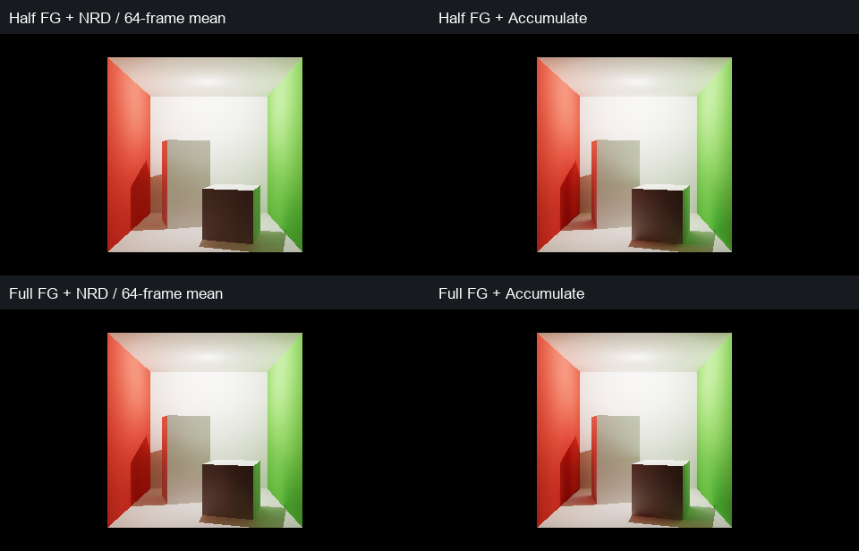

结论：当前 NRD 流程的滤波偏差是重要因素。改为长时间累积后，两种 FG 都明显优于原始 DDGI；半分辨率仍有重建损失，但与全分辨率的差距远小于使用 NRD 时。将之前 64 张 NRD 输出平均后，MSE 仍明显高于原始 FG 收敛结果，说明差异不只是瞬时噪点。此结论针对当前接入与参数，不代表 NRD 无法通过调整改善。
三组均先更新 probe 2560 帧，再重置 Accumulate 并累积 65536 帧。场景、相机、当前 Test Harness 点光源衰减、480×270 输出和未经降噪的 65536 spp PT reference 不变。Probe 始终更新，NRD 完全不在渲染图中。

| 方案 | MSE ↓ | HDR-FLIP ↓ | 时间方差 ↓ | GPU 帧耗时 ms |
|---|---|---|---|---|
| 原始 DDGI + Accumulate | 1.186129e-05 | 0.12054 | 1.746079e-15 | 0.2702 |
| 半分辨率 FG + Accumulate | 1.144663e-06 | 0.04790 | 5.953921e-13 | 0.3180 |
| 全分辨率 FG + Accumulate | 9.481761e-07 | 0.04736 | 2.489571e-12 | 0.3192 |
主表是第 65537～65600 帧累积输出的逐帧指标均值；图像显示第 65536 帧。半分辨率在 240×135 固定代表像素上发射射线，保留原来的深度/法线引导上采样，再累积完整图像。全分辨率在 480×270 发射射线，直接累积原始 DDGI.color。Lambert 场景每个有效采样像素每帧最多一根漫反射 FG 射线。
| 方案 | 32768→65536 MSE 变化 | HDR-FLIP 变化 | 两阶段图像差异 MSE |
|---|---|---|---|
| 原始 DDGI + Accumulate | -0.06% | -0.01% | 6.382404e-11 |
| 半分辨率 FG + Accumulate | -0.51% | -0.19% | 3.696208e-09 |
| 全分辨率 FG + Accumulate | -1.71% | -0.08% | 1.541757e-08 |
三组翻倍累积后的 MSE/HDR-FLIP 变化均小于 3%；以末次翻倍的图像差异估计剩余采样影响，均小于相对 PT 误差的 5%。这不是无限采样证明；探针相关性会影响此估计。PT reference 自身的残余噪声估计 MSE 为 2.209029e-08，也低于本次最小误差的 5%。所有阶段指标可见 JSON。
| FG 分辨率 | NRD 单帧 MSE 均值 | 64 张 NRD 输出平均后的 MSE | 本次 Accumulate MSE |
|---|---|---|---|
| 半分辨率 FG + Accumulate | 1.900586e-05 | 1.868071e-05 | 1.144663e-06 |
| 全分辨率 FG + Accumulate | 7.935121e-06 | 7.414132e-06 | 9.481761e-07 |

对 NRD 输出额外取 64 帧平均仅用于诊断平均画面的变化，不属于实时方案。NRD 单帧与长时间累积的差别同时包含残余噪声和滤波偏差；若 NRD 平均图仍与原始 FG 收敛图有系统性差异，说明不能仅用单帧噪点解释。64 帧具有时间相关性，不能将其当作严格无噪声的 NRD 期望。
时间方差和耗时的解释：普通累积已经用了约 65536 帧历史，随后 64 帧的方差自然极小，不能据此认为它比 NRD 更适合实时运动。GPU 时间是每帧更新开销（RTX 5070 / D3D12，255 个区间，包含 GBuffer、probe 更新、FG/重建、Accumulate 和色调映射），不代表一帧就能获得展示的收敛画质。普通累积没有重投影，镜头或场景变化时需要清空历史。
MSE 使用线性 HDR 完整光照、可见表面 mask；HDR-FLIP 沿用相同曝光和 PPD 67；显示 +3 EV / ACES fitted / sRGB。原始 DDGI 也做相同累积，以去除其 probe 更新波动；所以该行不等同于之前未累积的实时 DDGI。
build\windows-vs2022\bin\Release\Mogwai.exe --device-type d3d12 --headless --deferred --script tests/ddgi/accumulated_gather_comparison.py --width 480 --height 270 --logfile build/accumulated-gather-comparison.log python tests/ddgi/score_accumulated_gather_comparison.py
全分辨率交互入口：Run-AccumulatedGather.cmd。图工厂 scripts/DDGIAccumulated.py 支持 ddgi / half / full。原始捕获与计时：build/accumulated-gather-comparison。结果 JSON · 逐帧指标